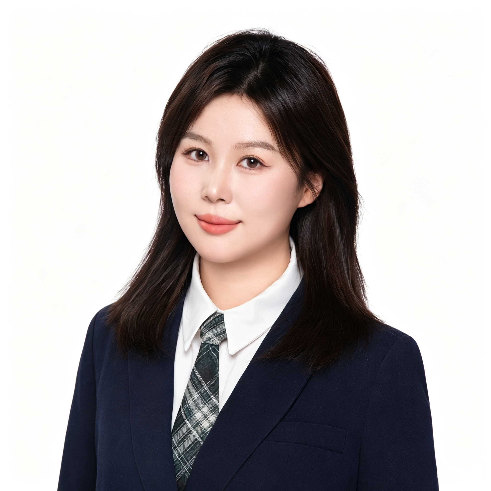
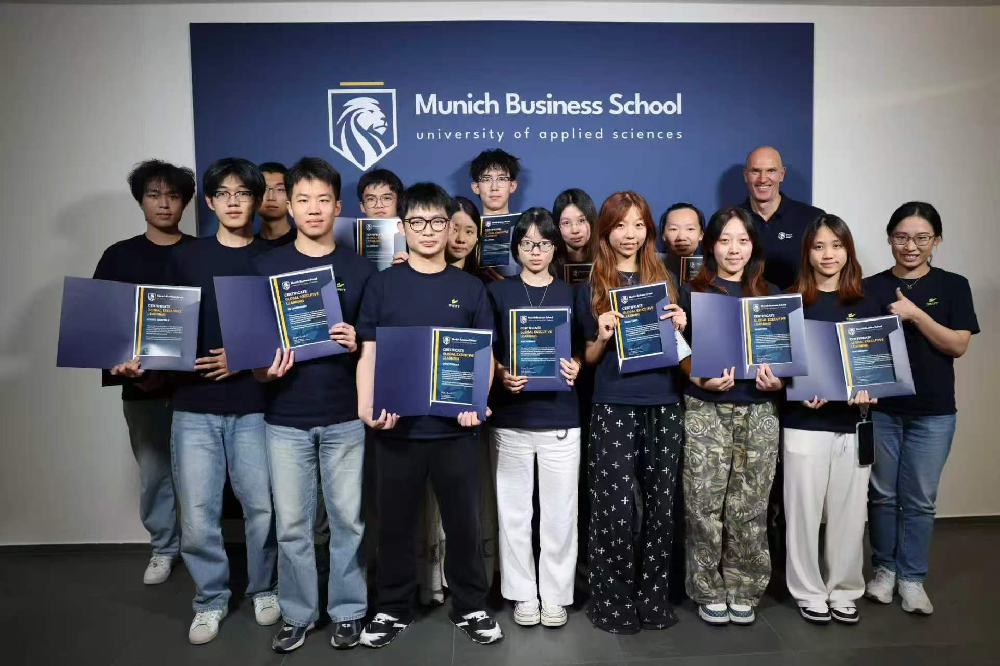
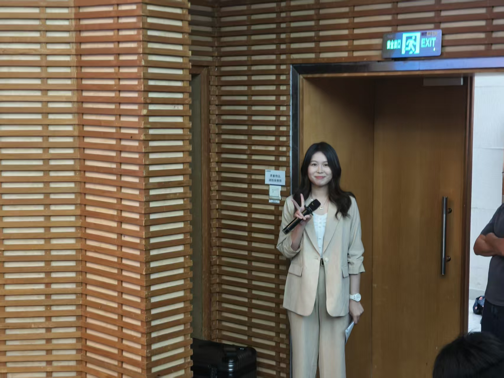

微众银行
AI产品经理 · 2026.03 — 2026.05
- 参与AI原生金融App迭代，围绕 LLM+Agent 金融场景开展需求分析、流程设计及 PRD撰写。
- 调研国内外相关AI和Web3产品，推动 2项创新功能 落地需求池。
- AI重构交易查询引擎，打通“意图识别—工作流—Python节点”，基于LLM实现 非标数据语义检索 与 动态标签计算。
把 AI 能力，转化为可落地的金融科技与商业洞察。
深圳大学金融科技专业本科生，关注金融业务、数据分析与 AI Agent 的结合。 曾参与 AI 原生金融产品迭代、企业资金预测、投行项目及金融科技行业研究， 希望以结构化分析和技术工具，支持业务判断与研究效率提升。

金融场景理解 · 数据驱动分析 · Agent 工作流设计
扎实的金融科技训练，兼顾金融理论、数据方法与技术应用。
围绕商业分析、数据处理与 AI 应用构建复合型知识结构。
围绕金融业务理解、产品分析和数据建模，积累从问题识别到方案交付的经验。
围绕行业扫描、信息整理、观点提取与结构化分析，探索将 AI Agent 融入研究工作流，辅助完成资料搜集、数据分析与业务洞察。
从金融产品原型到求职服务平台，展示 AI 能力如何融入具体业务流程
) 以虚拟宠物为媒介、基于银行内部数据合作与FISCO BCOS区块链的全场景金融管理助手，提供个人/家庭财产分析、理财建议、家庭共享账户及风险提醒等陪伴式金融服务
打造大学生一站式求职帮扶平台，聚合岗位信息、智能简历辅导与面试模拟。通过 AI 对话与 Agent 工作流，将岗位探索、简历优化和面试练习整合到求职流程中。
商业组负责人
“予视” AI 助盲眼镜帮助实现视障者的脑内的物体影像
AI-Agent 驱动的养宠金融产品
第一
基于Gemini视觉大模型对IPO敲钟照片进行高管肥胖度量，研究健康风险信号与资产定价；发现肥胖CEO与更低的IPO首日回报、企业估值和股票流动性相关，并利用司美格鲁肽准自然实验提供因果证据。
本研究面向非平稳金融市场的量化决策与风险管理问题，提出多专家动态切换算法（MES），融合趋势跟踪、闭式稀疏优化与长短期绩效建模，实现资产配置与策略动态选择，基于 6 个真实数据集验证模型有效性。
研究客户供应链风险（SCR）对供应商关系专用性投资（RSI）的影响，发现 SCR 显著促进 RSI，且在客户集中度和客户重要性较高时进一步增强，揭示供应链风险向供应商投资决策的传导机制。
 各大比赛路演，讲解产品和商业组分析部分
各大比赛路演，讲解产品和商业组分析部分

学院全奖德国暑期交换学习 三下乡支教/腾讯TVT陪伴大使，回馈社会
三下乡支教/腾讯TVT陪伴大使，回馈社会

主持学院各类活动